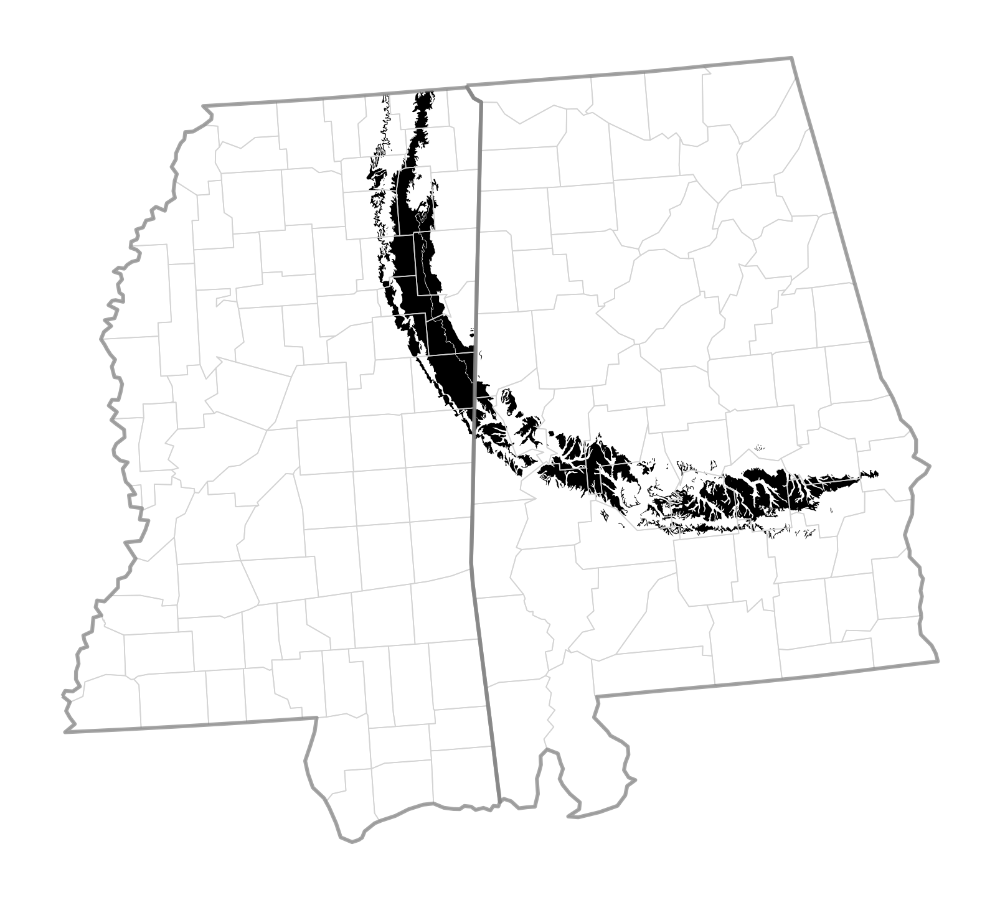
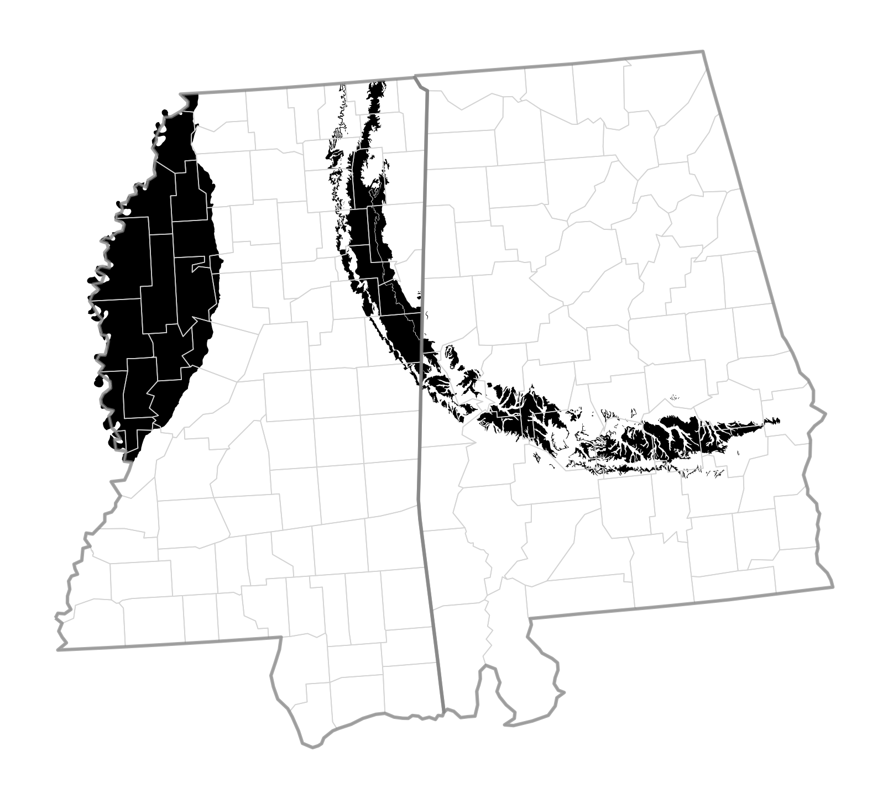
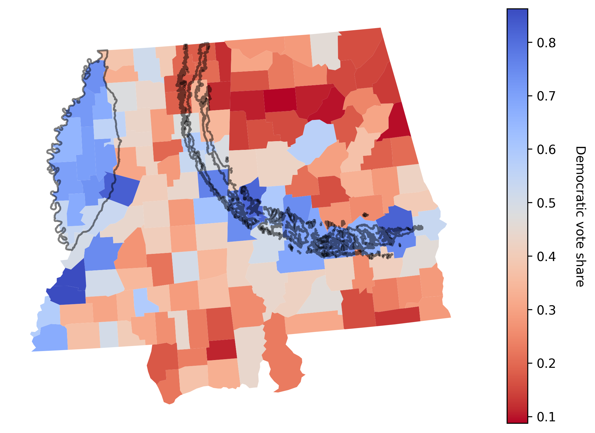
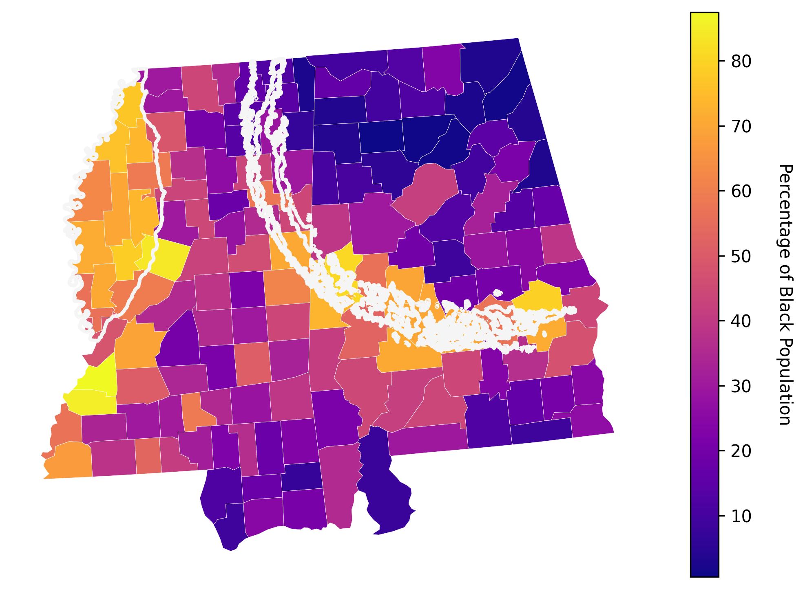

I recently came accross the term "Black Belt" in a reddit post which showed an interesting correlation between an antient coastline and modern voting patterns in the US. What I could find I think this is the orignal reddit post which in turn references to the original article that excellently explained the phenomenon.

The Black Belt stretching over Mississippi and Alabama
The Black Belt is a region in the southern United States that stretches across parts of Mississippi and Alabama. It is named for its rich and dark soil. The soil originates from chalk deposits formed in a shallow sea during the late Cretaceous period, roughly 65–90 million years ago. In the 19th century this fertile land became a major center of cotton production, which relied heavily on enslaved labor. After the Civil War many Black Americans remained in the region as sharecroppers and tenant farmers. As a result, the counties in this belt still have a high share of Black residents today and tend to vote strongly Democratic. I liked the visualizations in the original article and wanted to see if I could recreate them myself using publicly available data.The Black Belt formation
The Cretaceous period was between about 145 and 66 million years ago. During this time the area that is now the Black Belt was covered by a shallow sea, which was home to a diverse array of marine life.
The kind of creatures that lived under the creation of the Black Belt, by David Krentz (source: Wikimedia Commons)
{kind=link}
From the dataset in Ref. [1] a slider over the paleogeographic reconstructions of the region from 120 million years ago to the present day could be created. The Black Belt region is shown on top in black and was recreated with the data in Ref [2-4]. It is a little bit difficult to see but between around 70 and 65 million years ago the coast line (marked in the green rectangle) I think is the place in where the Back belt was formed. Note the image on top is where the Black Belt is located today.
Election results
From Ref. [5] a map of the 2020 presidential election results in the Black Belt region could be created. It shows a strong correlation between the areas that were covered by the sea during the Cretaceous period and the areas that voted for the Democratic candidate. However, I can also see that there is a big blue region around the border between Louisianna and Mississippi there to the left. It turns out that this region is the Mississippi Delta, created from sediments of the Mississippi River and known for its fertile soil.
The Mississippi Delta region (black region to the left), which is not part of the Black Belt but has similar geology and voting patterns
Layed ontop of each other we see the correlation between fertile grounds and Democratic voting patterns.
Election results with Black Belt and Mississippi Delta boundaries
Now, from Ref. [6] a map of the Black population share in the region could be created, which shows a very strong correlation with the areas that were covered by the sea during the Cretaceous period and the areas that voted for the Democratic candidate.
Black population share in Mississippi and Alabama with outlines of the Black Belt and Mississippi Delta
Conclusion
The story can be summarized as a long chain of events:
- A Cretaceous sea
- Chalk soil formation
- Cotton agriculture
- Enslaved labor
- A persistent Black population
- Modern Democratic voting patterns
A coastline that disappeared roughly 75 million years ago still leaves a visible imprint on the electoral map of the United States.
References
Code
- GitHub repository. (2026). The black belt: code for all figures. GitHub. https://github.com/plundhammar/black_belt.
Links and Resources
- First reddit post. u/DeepSeaNews. (2026). How a 100 million-year-old coastline still shapes presidential elections [Reddit post]. Reddit. https://www.reddit.com/r/interestingasfuck/comments/1rom5th/how_a_100millionyearold_coastline_still_shapes/.
- Second reddit post. u/DeepSeaNews. (2014). How a 100 million-year-old coastline affects modern voting patterns [Reddit post]. Reddit. https://www.reddit.com/r/MapPorn/comments/2e4o2r/how_a_100_million_year_old_coastline_affects/.
- Original article. Deep Sea News. (2012). How presidential elections are impacted by a 100 million-year-old coastline. Deep Sea News. https://deepseanews.com/2012/06/how-presidential-elections-are-impacted-by-a-100-million-year-old-coastline/.
Datasets
-
1. Paleocoastlines and continental margins.
Kocsis, A. T., & Scotese, C. R. (2023).
PaleoMAP PaleoCoastlines Dataset (v7.2), Zenodo.
doi:10.5281/zenodo.7828387.
I used the
CScoastline layers andCMcontinental-margin layers. -
2. Alabama geology.
Geological Survey of Alabama / NGMDB.
Geologic Map of Alabama (SM221).
Dataset used:
AL_2024_StateMap_SM221. Relevant units include Prairie Bluff Chalk, Demopolis Chalk, and Mooreville Chalk. -
3. Mississippi geology.
Mississippi Geological Survey / MDEQ.
Geologic Map of Mississippi.
Dataset used:
MS_Geology_1969.shp. - 4. County boundaries. U.S. Census Bureau. TIGER/Line county shapefiles. Used for county geometries and spatial joins.
-
5. Election results.
MIT Election Data and Science Lab.
County Presidential Election Returns, 2000–2024.
Dataset used:
countypres_2000-2024.csv. - 6. Demographics. U.S. Census Bureau. 2020 Decennial Census. Used to calculate county-level Black population share.